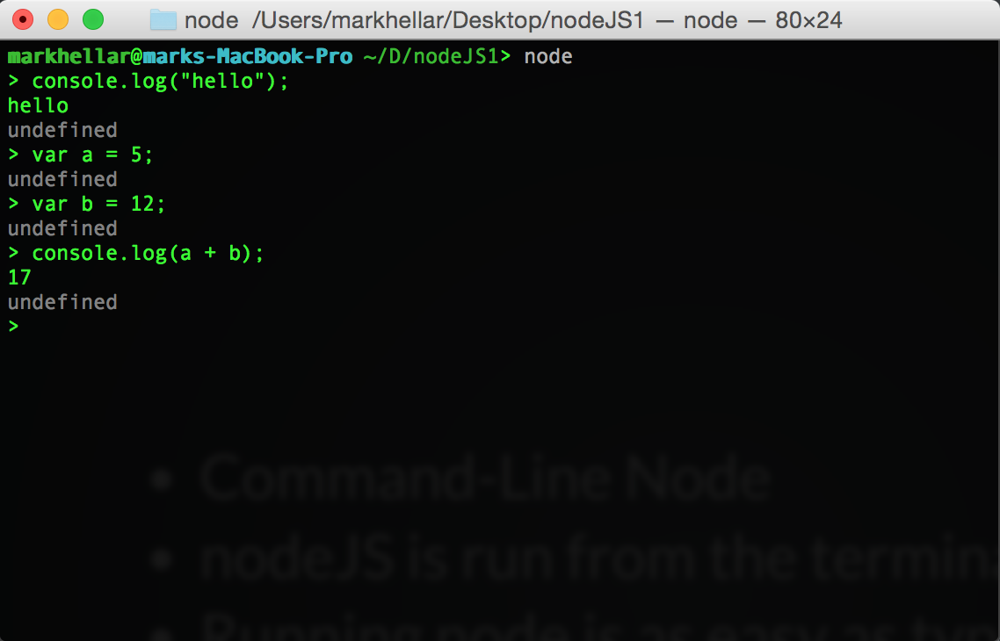

Internet of Things: Week 5
Internet of Things: Week 5
Internet of Things: Week 5
Internet of Things: Week 5
Grab the code here: http://bit.ly/2d5JEmU
- Homework Presentations!
- Midterm Projects
- Introduction to NodeJS
- Node Serial Port
Topics for This Week:
Homework Presentations!
Midterm Projects
Download It!
http://nodejs.org/download/


The V8 JavaScript Engine is an open source JavaScript engine in the Chrome browser

NodeJS was created By Ryan Dahl
V8 compiles JavaScript to native machine code before executing it, which runs very fast.
NODE IS ESSENTIALLY V8 minus the browser, WITH SOME ADDITIONS SO THAT YOU CAN USE IT TO WRITE SERVERS.
Node API
I just want to make art!
Sid Lee Dashboard
You can run node from the command line
Just type node

A Node program in a file
Contents of app.js
/**
* 01 - Getting Started
* Declare a variable, perform some math, output the result
*/
var initialNumber = 0;
var finalNumber = initialNumber + 10;
console.log(finalNumber);
/**
* 01 - Getting Started
* Declare a variable, perform some math, output the result
*/
var initialNumber = 0;
var finalNumber = initialNumber + 10;
console.log(finalNumber);
simple little programs
cd code_node1/simple from the terminal
and open in sublime text
type 'node app.js'
/**
* 01 - Getting Started
* Declare a variable, perform some math, output the result
*/
var initialNumber = 0;
var finalNumber = initialNumber + 10;
console.log(finalNumber);
type 'node process.js'
/**
* process.js
* Examples of the process object in nodeJS
* Working with directories:
*
* cwd() : current directory
*
*/
console.log("Current directory is: " + process.cwd());
/*
* Host information
*
* arch : Process Architecture
* platform : darwin (OS X), freebsd, linux, sunos or win32
*
*/
console.log("Node is currently running on the " + process.platform
+ " platform on the " + process.arch + " architecture.");
//******************************************************************************//
type 'node argv.js'
/*
* Reading command line arguments:
*
* process.argv contains all command-line arguements
* passed to the node app
*
* The command > node process.js arg1 arg2
* produces:
* 0: node
* 1: /path/to/process.js
* 2: arg1
* 3: arg2
*/
process.argv.forEach(function(val, index, array) {
console.log(index + ': ' + val);
});
type 'node timer.js'
/*
* intervals.js
* Intervals and Timeouts in javascript
*/
//******************************************************************************//
/*
* setInterval(callback, time) : repeats the callback function every *time* ms
* clearInterval(timer) : stops a corresponding setInterval callback
*/
var repeatingFunction = setInterval(function() {
console.log("Ping");
},1000);
//******************************************************************************//
with NodeJS
Open a terminal

Type 'say' + space + "something to say"
type 'node speak.js'
//the child_process library let's us execute command line commands, https://nodejs.org/api/child_process.html
var exec = require('child_process').exec;
//This variable stores the command we want to execute, we are going to use the say command
var say = 'say ';
//let's make a function that speaks
function speak(whatosay){
//speak the string
exec(say + whatosay);
//log it to the console
console.log(whatosay)
}
// call the function
speak("I just do this");
*/
Modify the program, change the voice and what it says.
Save it and then run node app.js
Node is good for writing webservers
node simple_server.js
Open a browser and go to localhost:8000
contents of hello.js
// Load the http module to create an http server.
var http = require('http');
// Configure our HTTP server to respond with Hello World to all requests.
var server = http.createServer(function (request, response) {
response.writeHead(200, {"Content-Type": "text/plain"});
response.end("Hello World\n");
});
// Listen on port 8000, IP defaults to localhost
server.listen(8000);
// Put a friendly message on the terminal
console.log("Server running at http://localhost:8000/");
Node documentation:
Here
What is NPM:
Node Package Manager
Use NPM to install prebuilt node code
Let's try it
cfonts -t "Hi Class"
Let's try it
sudo npm install -g cli-mandelbrot
cli-mandelbrot
Packages to connect with Arduino
Packages to connect with Arduino
We need to install a version Manager for node
sudo npm install n -g
n 0.12.0
Project 1
Connect a potentiometer

Project 1
Connect a potentiometer

Project 1
1: Upload AnalogInOutSerial.ino to arduino from AnalogInOutSerial in the code folder
2: Run node index.js from the serialbasic from serialbasic in the code folder
Project 1
1: Run node index.js from the serialbasic from serial_ws in the code folder